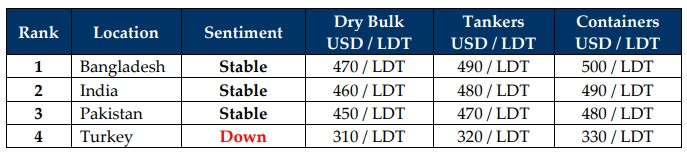

inWeekly Demolition Reports09/12/2024

As world economies seem to settle on an overall even playground with the end of week 49, not only is the shipping industry but even the ship recyclingindustry is going through a calmer period of fairly uneventful occurrences – at last. To start, WTI crude oil futures slipped about 1.6% through the week, settling in at about $67.2 / barrel on Friday and recording a drop of nearly about 1% on the back of concerns surrounding a surplus in 2025, which in turn has kept output in tight check. The Baltic Exchange Sea Freight Index also cooled its seven-day losing streak on Friday, bouncing back about 0.5%, and propelled primarily by larger sized vessels. Translation? The ensuing performance of the Baltic Exchange Dry Index (BEDI) has, and should see a general increase in the supply of mid-sized (and smaller) dry (and even the occasional wet) units being offered into the ship recycling markets, as evident from both Bangladeshi and Indian port reports over recent weeks. As the supply of recycling tonnage mercifully firms and fundamentals seem stable (compared to recent weeks) at a few locations, the U.S. Dollar continues on its historic rise against the others i.e., CNY losing nearly 40 basis points), BDT losing 20 basis points, TRY losing 15 basis points, INR losing 11, and PKR being the lone streaker to actually gain ground as the week ended.
Overall, ship recycling markets have mercifully stabilized of late and as the year-end nears, a price floor seems to have been established after a year of significant declines that has seen nearly USD 150/LDT in prices, lost in a matter of months. Mid-to-high USD 400s/LDT are now the prevailing norm for tonnage across most sectors, bidding adieu to the days where the coveted price of USD 500/LT LDT and well over, were regulars on the scene. Notwithstanding, it is certainly encouraging to see a greater level of demand emerging after the destitute state of the markets & global economies, and the perception is now that prices should only improve from here on out. After a tumultuous year of declines and instability, the bleeding on steel also seems to have halted for the time being, and (hopefully) positive elections concluded by Q1 2025 should see India and Bangladesh back into the fray, armed with demand for ships and output of domestic steel. Bangladesh, meanwhile, has unfortunately endured one of the most destabilizing of years in the nation’s history, where it’s PM was compelled to abdicate and flee the nation, an interim government forced to take control amidst a drastic monsoon that compelled infrastructure projects & ship recycling to grind to a screeching halt, resulting in recycled ship steel failing to shift to gradually shuttering steel mills, as a result of.
The decisive victory for President Trump after the recent U.S. election may bring with it, economic turmoil of its own with intended tariffs announced on Mexico, Canda, and China next year. But the tariffs on China will be most interesting, especially on steel & auto exports. With the dumping of cheap Chinese steel also having religiously caused its characteristic summer belly aching, concerns in Pakistan & India should ease as we slowly approach the turn of the year. The upcoming stimulus package for China itself is set to be announced by the Chinese government at some point around the New Year, which may finally see some optimism for its economy, and this should even have major implications for the shipping, ship recycling, and global industries at large. As such, as ship recycling markets head into 2025 on a firmer footing, we can only hope that this economic outlook is maintained well beyond the New Year, so that ship recycling can resume.
For Week 49 of 2024, GMS Market Rankings / vessel indications are as below.

📄 Download PDF: Ship-recycling-market-insight-Week-49-12-06-2024-Encouraging...Yet_.pdfSource: GMS,Inc.https://www.gmsinc.net/gms_new/index.php/web